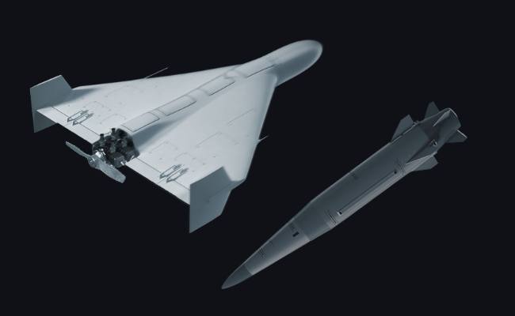
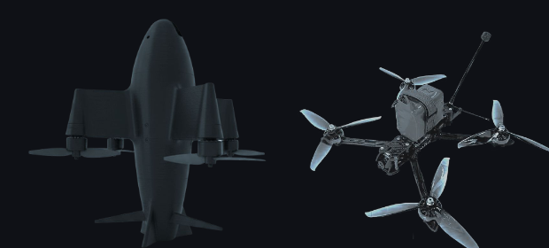
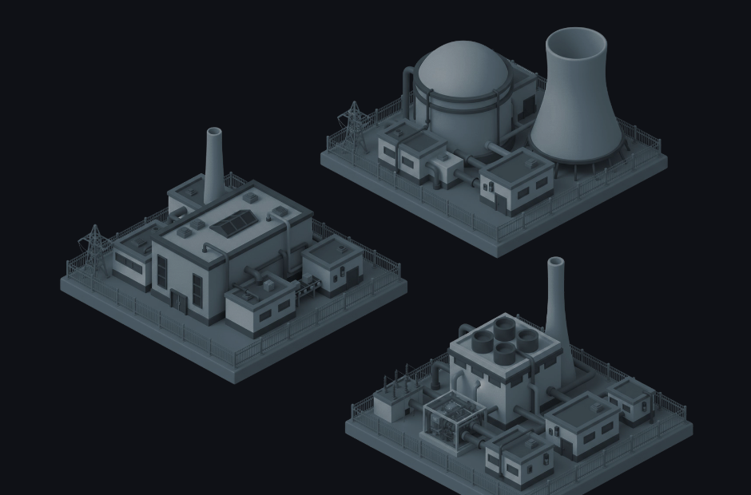
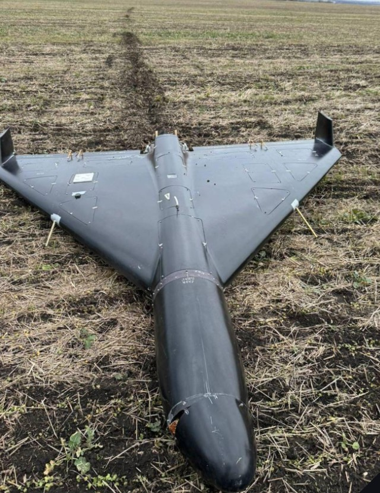

Persistent mass attacks
Shahed-136 / Geran-2 class UAVs, cruise missiles, KAB and UMPC guided bombs and ballistic missiles, employed in sustained waves rather than single strikes.
ERK / Products / ERK Electronic Warfare
Strategic Electronic WarfareWide-area denial of satellite navigation across every operational constellation. Where ERK SHIELD protects a site, ERK EW denies the guidance layer itself — out to 370 km, from a system that sets up in under four hours.
Precision now comes cheap and arrives in volume. Defences priced per interceptor cannot hold against threats priced per airframe.

Shahed-136 / Geran-2 class UAVs, cruise missiles, KAB and UMPC guided bombs and ballistic missiles, employed in sustained waves rather than single strikes.

Satellite-guided accuracy is now available from scalable, inexpensive production lines — the cost asymmetry runs against the defender on every engagement.

Power generation, substations, refineries and civilian assets are the targets, and they cannot each be given their own point-defence system.
Almost every threat in that profile navigates by satellite. ERK EW attacks the common dependency: it denies GNSS across a wide area, so guided weapons lose the reference they steer by before they reach the target set — one system covering what would otherwise need a point defence at every asset.
| Constellations | GPS · Galileo · GLONASS · BeiDou · QZSS · NavIC |
|---|---|
| Effective range | 45 – 370 km |
| Coverage model | Wide-area denial |
| Autonomous endurance | up to 24 hrs |
|---|---|
| Continuous operation | unlimited with generator |
| Setup time | < 4 hrs |
| Activation time | < 1 min |
Power output, antenna configuration, waveform detail and siting guidance are released under NDA following end-user verification.

Threats neutralised with ERK Electronic Warfare in operational use between November 2025 and February 2026:
About these figures. The totals above are ERK's own operational reporting for the stated period and have not been independently audited. Engagement records and the supporting assessment methodology are made available to qualified end users under non-disclosure agreement.
Manufacturing capacity is sized for sustained series delivery rather than one-off builds, so quantity orders do not queue behind a single line.
Delivery schedules are measured against operational urgency — the system is of no value arriving after the campaign it was bought for.
Interfaces to NATO and third-party systems through encrypted links and documented APIs, so ERK EW joins an existing air picture instead of replacing it.
Send us the area to be protected and the threat axis, and we will return a siting plan, coverage estimate and delivery schedule.